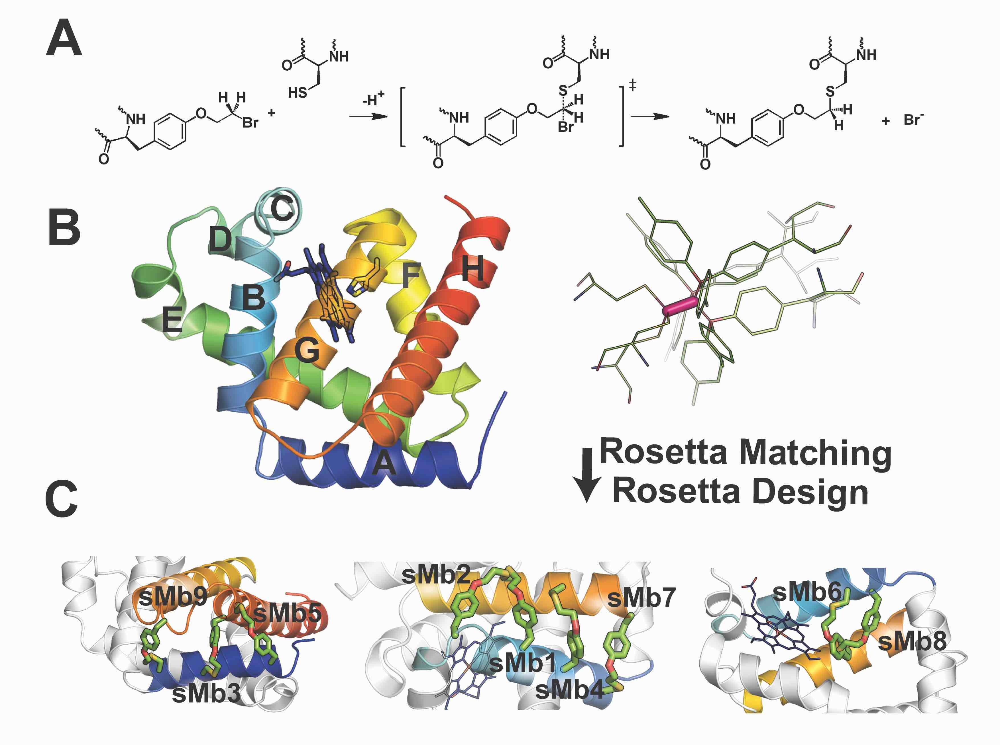

Our Research
We design new and optimize existing enzymes using computational and experimental tools. Ultimately, we are interested in understanding the fundamental biophysical bases of enzyme function, and use this knowledge to engineer enzymes for applications aimed at addressing 21st-century challenges.
These applications include biodegradation of pollutants and toxins, stabilizing enzymes in harsh abiological environments, extending the range of enzyme-catalyzed chemistries to non-biological reactions, the design of enzymatic "catalytic" therapeutics, and making cancer chemotherapy more specific.
Designing Proteases: Towards catalytic drugs
Site-selective proteolytic cleavage is a ubiquitous post-translational modification involved in the transfer of biological information (e.g., via cascades) in many cellular processes and their dysfunction. Proteases with “dialed in” substrate selectivities would be ideal catalytic drugs designed to irreversibly neutralize their target substrates (e.g., viral coat proteins) if their substrate selectivity can be precisely controlled.
No robust and general method is available for protease substrate specificity design, in spite of ~25 years of efforts by protein chemists and chemical engineers.
Our approach is to develop a mechanism-guided biophysical framework that allows design for both positive and negative substrate specificity, and tightly couple it with high-throughput experimental testing using machine learning approaches
Design of Stimulus-Responsive Enzymes
Conventional Chemotherapy is limited by the lack of spatial and temporal control over the action of the toxic drug. Computationally designed “smart” enzymes, that are constitutively inactive but are activatable by a tumor-specific stimulus (MMP-2 protease) or light (via use of attached azobenzene dyes) are expected to overcome these limitations. We have obtained good starting leads straight from computational design (~10X switches) and developed high-throughput screening approaches. We are working with the Deiters Lab (Univ of Pittsburg) and Drake lab (Univ of Minn) on testing these Designs and Methodology
Protein Stabilization
Currently available methods for protein stabilization, such as directed evolution and consensus mutagenesis, can be time- and labor-intensive and often involve extensive amino acid substitutions, which may impair the activity and/or selectivity of the enzyme.
We have developed a computational design method (Rosetta-guided protein stapling, R-GPS) for enzyme stabilization that uses structure-based modeling to introduce covalent ‟staples” in a protein scaffold via genetically encodable noncanonical amino acids.
This method was applied to obtain stapled variants of a stereoselective cyclopropanation biocatalyst featuring greatly increased thermostability and robustness to high concentrations of organic cosolvents In collaboration with Fasan (Rochester) and Ando (Cornell) labs, and using iterative design-build-test-characterize cycles, we are now extending this minimally invasive strategy for protein stabilization to (1) a variety of other enzymes and proteins, and (2) to genetically encodable non-canonical amino acids that enable other kinds of crosslinking chemistries.
Novel Computational Design Methods
We remain interested in the development of new computational design methods and refinement of existing methodology, as these are the foundations of our research program.
Our efforts include introducing a new (Potts-model-based) modeling/design algorithm in Rosetta, a method for protein photosensitization using chemically crosslinked small molecules, and a method for designing nested (domain-inserted) proteins.
Finally, we are pursuing force-field improvements in Rosetta, working on a project with David Case (Rutgers) to compare and productively combine energy evaluations using Rosetta and Amber approaches.
Designing Supramolecular Enzyme Assemblies
Enzymatic processes in nature are spatially organized. To develop the ability to similarly organize synthetic enzymatic pathways and develop efficient biosensors using enzymes (requiring a high surface area to volume ratio), we have developed a modular design approach that allows construction of supramolecular assemblies in response to chemical and/or optical stimuli. We have built fractal supramolecular topologies with extremely high surface area to volume ratios that organize component enzymes into hyperbranched dendritic supramolecular topologies. Although fractals are ubiquitous in nature, our studies represent the first instance of designing such topologies using protein self-assembly.
We are applying this technology to develop protein assemblies for biodegradation by taking advantage of the high surface area:volume ratios (like a sponge).